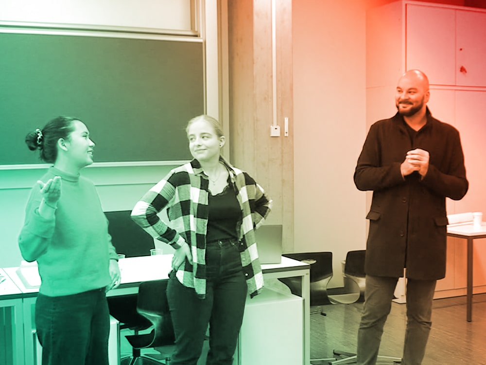

24. August 2019
Ich stell' mich ins Netz
Erster Tag im Schulfach «Experimentelles Erzählen» und nicht die leiseste Ahnung, worum es darin geht. Doch das erste gegenseitige Beschnuppern mit unserem Dozenten Basil Vogt verspricht bereits erste kreative Ansätze. Sowohl analoge als auch − im weitesten Sinne − digitale.
Allen Schülern wurde ein leeres Blatt Papier ausgehändigt mit der Bitte, unseren Namen sowie ein Stichwort zur Person
(Merkmal oder Hobby) zu notieren. Keine weiteren Erklärungen waren dazu erlaubt. Einzeln nach der Reihe setzten wir uns
vor die Klasse und wurden mit dem Papierschild quasi zum stummen Social Media-Profil. Einige Lacher und
wilde Theorien später durfte ich der Klasse verraten, worum es sich bei meinem
#JurassicPark
handelt. Als Film- sowie Dino-Liebhaber stellte für mich dieses Hashtag die perfekte Kreuzung beider Kategorien dar.
Mein umfangreiches Filmwissen sowie mein T-Rex Tattoo unterstützten dabei diese Seite an mir.
Bei der zweiten Aufgabe kam bereits ein Ansatz von experimenteller Erzählform zum Zug. Wir teilten uns in Gruppen auf,
um von unserer Umgebung Fotos zu schiessen. Experimentell war daran, dass wir selbst zur «menschlichen Kamera» wurden
und uns selbstausgesuchte Motive einprägen und auf leere Dias zeichnen mussten. Die Motive entstanden komplett ohne
Zusammenhang. Die Aufgabe bestand dann darin, aus den gezeichneten Dias eine zusammenhängende Geschichte zu schreiben.
Diese sehr kreative Spielerei machte grossen Spass, da die vorgestellten Geschichten − unterstützt durch die Dias −
die haarsträubendsten und witzigsten Erzählungen hervorbrachten. Dabei fanden Krimi-Geschichten aber auch erfundene
Superhelden ihren Platz darin.
7. September 2019
The Baby Runner
Im Zeitalter von Fake News ist es wichtig, Nachrichten stärker zu hinterfragen. Um so witziger, wenn Geschichten in Zeitungsartikeln so unglaublich erscheinen, dass sie fast wahr sein müssen. Und damit Futter für spannende Computerspiele bieten. Verwirrt über diesen Zusammenhang? Ok, gehen wir eins nach dem anderen an.
Am zweiten Tag des Schulfaches «Experimentelles Erzählen» widmeten wir uns alten Zeitungsartikeln. Kurzgeschichten
wie sie nur das Leben schreibt. Die Skurrilität kam dabei nicht zu kurz. Von Geldfressenden Ratten über
Süssigkeitenklauende 2-Jährige war alles dabei.
Wir teilten uns wieder in Gruppen auf und legten uns je auf eine Kurzgeschichte fest. Diese stellte die Ausgangssituation
dar für die Entwicklung eines «interaktiven» Games. Der Zeitungsartikel meiner Gruppe beinhaltete ein frisches Elternpaar,
welches ihr Neugeborenes im Taxi vergessen hatte. Erst einige Rundfahrten später fiel es dem Taxifahrer auf, welcher
daraufhin die Polizei verständigte. Das Baby wurde den Eltern unversehrt zurückgegeben.
Wir waren uns als Gruppe schnell darüber einig, dass diese Geschichte förmlich darum schreit, in ein Jump'n'Run
Computerspiel verwandelt zu werden. Wir konzipierten den Inhalt des Spieles so, dass dem Spieler die Kurzgeschichte erzählt wird (Elternpaar
vergisst Baby im Taxi). Die Wendung ist aber, dass sich das Baby in bester comichafter Manier selbstständig macht und die
Grossstadt erkundet. Dabei springt es von Hausdach zu Hausdach und darf nicht von den Hochhäusern runterfallen. Oder von
der Polizei erwischt werden. Denn dann wäre das Spiel... «Game Over».
14. September 2019
Flohmarkt Expedition
Es gibt Orte, die ziehen uns unerklärlich in ihren Bann. Und erzählen uns Geschichten aus naher und ferner Vergangenheit. So wie Flohmärkte. Diese Orte scheinen wie aus einer anderen Zeit, verzaubern mit der Begegnungen von spannenden Menschen. Und Gegenständen, die alle eine Geschichte zu erzählen haben. Aber alles der Reihe nach...
Bis es soweit war, dass wir eine Expedition machten, brauchte es noch etwas Vorbereitung. Während der Schulstunde stellte
Basil mit uns eine Ideenbörse zusammen. Jeder machte sich Gedanken zu verschiedenen kreativen Erzählformen und schrieb
die Ideen auf ein Blatt Papier nieder. Wir trugen diese zusammen und besprachen sie im Detail. Mir fielen dabei
Erzählformen wie «rückwärts erzählte Geschichten» oder «Fortlaufende Erzählungen in zwei verschiedenen Sprachen» ein.
Nachdem jeder seine Ideen vorgetragen hatte, bildeten wir Gruppen, um eine der vielen Ideen zu realisieren. Meine Gruppe
entstand durch Nina und Desiree aufgrund meines Vorschlags «Alltagserzählungen aus der Sicht von Gegenständen».
Dies war offiziell der Startschuss zu unserem Projekt «The Life of Items».
Damit wir uns Inspirationen für unser Projekt holen konnten, brach Basil mit uns zu einer Expedition auf.
Der Ort des Geschehens war der Flohmarkt Kanzlei in Zürich. Was wir dort fanden, waren spannende Geschichten zu allerlei
Flohmarkt-Gegenständen. Wir fotografierten und dokumentierten diverse Gegenstände, um sie später in unserem
Projekt zum Leben zu erwecken und uns von ihren Alltagssorgen berichten zu lassen.

Ich stell' mich ins Netz
© Foto by Patrick

The Baby Runner
Flohmarkt Expedition
21. September 2019
Alte Spiele
Erst das Vergnügen, dann die Arbeit. So will es ein altes Sprichwort. Oder ist es andersrum? Zumindest spiegelt diese Version unseren vierten Unterrichtstag perfekt wider. Basil wusste nämlich, womit er uns überraschen und gleichzeitig inspirieren konnte, um für unser Projekt Vollgas geben zu können.
Um die Stimmung aufzulockern und uns alle für den kreativen Prozess vorzubereiten, brachte er uns Karten- und
Gesellschaftsspiele aus den 60er und 70er Jahren mit. Wir bildeten Gruppen und probierten die Spiele aus. Wer hätte
gedacht, dass man auch ohne Playstation Spass haben kann? Die Spiele bestanden hauptsächlich aus Frage- und Antwortkarten.
Und die darin enthaltenen Formulierungen stammten offensichtlich aus einem fernen Jahrzehnt. Der Spass, der aber daraus
entstand, war zeitlos. Die Auswahl der Spiele war nicht von ungefähr: Die experimentelle Erzählweise hat nämlich viele Gesichter.
Zum Abschluss dieser Auflockerungsrunde präsentierten wir die Spiele jeweils den anderen Gruppen.
Nun legten wir den Fokus wieder auf unsere Projektarbeiten. Nina, Desiree und ich trugen für unser «The Life of Items»
Projekt die wichtigsten Eckdaten zusammen, bevor wir diese nur grob der Klasse präsentieren durften. Es stand fest,
dass wir diverse Gegenstände aus dem Flohmarkt zu Sketche verarbeiten und vorführen würden. Jeder von uns sollte einen
Gegenstand spielen, und die Klasse sollte mit eingestreuten Hinweisen herausfinden, um was für ein Objekt es sich handelt.
28. September 2019
Lineare Erzählungen
Wir kommen zur Welt. Wir leben und lernen. Wir sterben. Dies ist die etwas dramatische Darstellung dessen, was uns wohl alle erwartet. Fakt ist aber, dass die uns bekannten Erzählformen wie das Leben selbst auch in drei Akten aufgeteilt werden. Und nicht jede Erzählung endet im letzten Akt mit einem Happy End. Aber wer will das schon?
Genau dieser Frage gingen wir am fünften Tag auf den Grund: Welche Art der Erzählung mögen wir und welche nicht.
Ausschweifende Erzählungen, stockende Plots oder künstlich herbeigeführte Happy Ends können ganz schöne Stimmungskiller
sein. Dramatische Wendungen, detaillierte Charakterzeichnungen und geschliffene Dialoge, die mit wenigen Worten die
Geschichte vorantreiben, sorgen dafür umso mehr für Spass an einer Geschichte. Sei es in Filmen, Serien oder gar in
Podcasts. Basil teilte unsere Präferenzen in die zwei Kategorien «Geht doch» (Vorlieben) und «Geht nicht» (Abneigungen)
auf und besprach diese ausführlich mit uns.
Nach dieser gemeinsamen Disskusion lehrte er uns die Aufteilung der linearen Erzählungen innerhalb verschiedener Sparten.
Diese kann Spannung oder Überraschung beinhalten, Vorankündigungen, einen emotionsgeladenen Showdown oder Erwartungshaltung
erzeugen (und brechen). Auch mit Varianten und Repetition wird gespielt (dasselbe anders erzählt, z.B. Running Gags).
Abgerundet wurde der Tag mit der Besprechung der verschiedenen Archetypen der Erzählung. Dies kann die «Überwindung
des Monsters» sein oder «Vom Tellerwäscher zum Millionr». Wichtig dabei ist, dass die Figur einer Erzählung was
erleben bzw. erledigen muss. Es braucht ein Hindernis, damit eine Geschichte entsteht und dadurch Spannung entsteht.
5. Oktober 2019
Charaktere
Die Lichter gehen aus. Der rote Samtvorhang hebt sich. Die kostümierten Schauspieler erwachen zum Leben. Wer ist der Held? Wer ist der Antagonist? Schwer zu sagen. Doch beide Charaktere handeln durch Motivation und Hintergrundgeschichte, um ihre Bestimmung zu erfüllen.
Auch an diesem Tag kam unsere Kreativität nicht zu kurz. Basil händigte uns einen Fragebogen mit dem Titel
«Heldinnen und Helden erfinden» aus. Diese Aufgabe nahmen wir wieder als Gruppe wahr. Wir sollten einen Charakter
erstellen mit Hand und Fuss. Wortwörtlich. Denn neben der Charakterisierung der Hauptfigur in schriftlicher Form
sollten wir diese auch als Skizze festhalten. Wir erfanden einen Charakter von Grund auf und beantworteten Fragen
wie «Welche Macken hat die Figur?», «Wie sieht sein Lebenslauf aus?», «Was sind seine Vorlieben, Gewohnheiten und
Wünsche?».
Spannend dabei waren nicht nur die kreativen Einfälle unserer Gruppe. Auch die anderen Gruppen mussten sich beweisen,
indem sie aus unseren schriftlich festgehaltenen Charakterisierungen eine Skizze der Figur interpretierten. Oder im
zweiten Schritt nur unsere Helden-Zeichnung sahen und den Fragebogen mit denselben Fragen ausfüllen mussten.
Die daraus resultierten Interpretationen von Charakterisierung und Skizzierung machte unerwartet viel Spass. Teils war
Original und Interpretation nahe beinander. Und teils hätte es nicht weiter entfernt sein können.
Basil schaffte es, uns auch mit dieser Gruppenarbeit einen Schritt näher Richtung experimenteller Erzählung zu bringen.

Alte Spiele

Lineare Erzählungen

Charaktere
26. Oktober 2019
Story Boards
Wenn ein Bild mehr als tausend Worte sagt, dann sagt ein Story Board mehr als ein ganzes Drehbuch. So könnte zumindest die Definition lauten.
Wir Menschen sind visuell gesteuert. Und im Bereich Film bzw. dessen Vorbereitung sieht es nicht anders aus.
Story Boards heisst auf gut Deutsch soviel wie «Skizzierung einzelner Szenen für einen Film». Dieses Hilfsmittel
wird eingesetzt, um die Filmideen von Autoren und Regisseuren visuell darzustellen. Dabei wird ersichtlich,
wie die Handlung der Geschichte verläuft − oder wie die Kameraführung eingesetzt wird. Jede Szene des
Films wird in einzelne Einstellungen aufgelöst und in Form von Skizzen dargestellt. Das Team produziert auf
Grundlage dieser Zeichnungen den Film.
Ein weiteres wichtiges Hilfsmittel bei Story Boards sind Pfeile: Diese dienen dazu, die Kameraführung oder
Perspektive aufzuzeigen. Damit hat z.B. der Regisseur bereits ein konkretes Bild oder konkreten Ablauf im Kopf,
welchen er visuell genau so umgesetzt haben will. Dies kann auch dazu führen, dass den Kameraleuten alles vorgeschrieben
wird und dadurch die Kreativität eingegrenzt wird.
2. November 2019
Generalprobe
Vergessene Requisiten, kleine Textaussetzer und eine kranke Darstellerin − Patzer bei der Generalprobe bringen Glück und lassen auf eine erfolgreiche Premiere hoffen.
So zumindest lautet der Aberglaube, dass eine schlechte Generalprobe zu einer guten Premiere führt. Ob die Theatergeister
auf unserer Seite sind?
Was uns nun noch von der grossen Premiere trennte, war ein letzter Schultag, welchen wir für die Generalprobe genutzt haben.
Leider war an diesem Tag Desiree krank, was Nina und mich zur Improvisation zwang. Wir spielten alle Sketche zu zweit durch,
wobei ich neben meinen mehr schlecht als recht auswendig gelernten Texten auch noch die Texte der fehlenden Person vorlas.
Dies war insofern die beste Lösung, da Nina ihre Texte schon ziemlich sattelfest auswendig konnte und damit aus dieser
Generalprobe am meisten profitierte.
Trotz einiger Textaussetzer kam der Spass nicht zu kurz und wir waren ganz zuversichtlich, was die anstehende Premiere
unseres Stückes «The Life of Items» anging.
9. November 2019
The Life of Items
Nach wochenlangem Ausarbeiten von Charakteren, Schreiben von Dialogen und Auswendiglernen der Texte waren wir am Ziel: Die Uraufführung des Stückes «The Life ot Items» fand statt!
Das Warten auf diesen grossen Tag hatte endlich ein Ende. Und die unzähligen Textproben sollten nun endlich Früchte tragen.
Die Nervosität war sehr hoch. Auf Basils Frage hin, welche Gruppe anfangen und ihr Projekt als erstes präsentieren will,
streckte ich gleich auf. Mein Gedanke war nur noch einer: Ich will das Stück endlich präsentieren, an welchem wir
so lange gearbeitet haben.
⇨ JETZT FILM ANSEHEN ⇦
Die Premiere war ein voller Erfolg. So schrieben es zumindest die Kritiker in der «New York Times». Es gab keine Textpatzer
und überhaupt verlief der Dialogfluss zwischen den verschiedenen Charakteren einwandfrei. Wir hatten Spass an der Darstellung diverser
Flohmarktgegenstände, und das sah man uns auch an. Die Klasse hat viel gelacht und die eingestreuten Hinweise grösstenteils
verstanden, um die dargestellten Gegenstände richtig zu erraten.
Alles in allem können wir als Gruppe sagen, dass sich der Aufwand gelohnt hat und die Sketche gut angekommen sind. Und das
ist für (Laien)Schauspieler der schönste Lohn.

Story Boards

Generalprobe
© Foto by Nina
